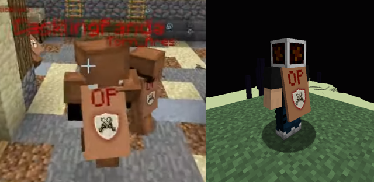

| » Useful sites « | |
|---|---|
| zzuf's GitHub | zzuf-maps Repository |
| » zzuf's Mod Forks « | |
| zzuf's HidePlayers Fork 1.8.9 | zzuf's ChatPing Fork 1.8.9 |
| zzuf's PlayerVisibility Fork 1.20.1 | zzuf's WAILA Fork 1.8.9 |
| » Useful sites « | |
|---|---|
| zzuf's GitHub | zzuf-maps Repository |
| » zzuf's Mod Forks « | |
| zzuf's HidePlayers Fork 1.8.9 | zzuf's ChatPing Fork 1.8.9 |
| zzuf's PlayerVisibility Fork 1.20.1 | zzuf's WAILA Fork 1.8.9 |

My attempt at recreating the OP cape that most members of the Project Ares team wore during the Project Ares vs HungerCraft tournament. Not perfect, but I believe I got close enough!


© zzuf